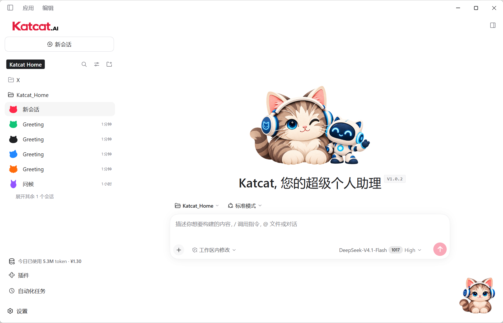
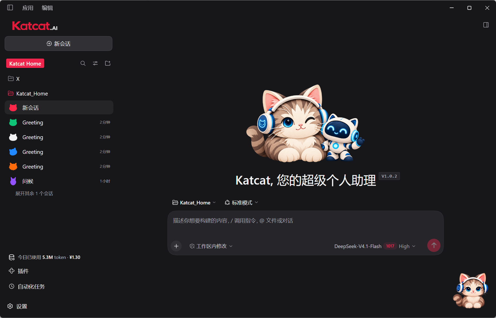
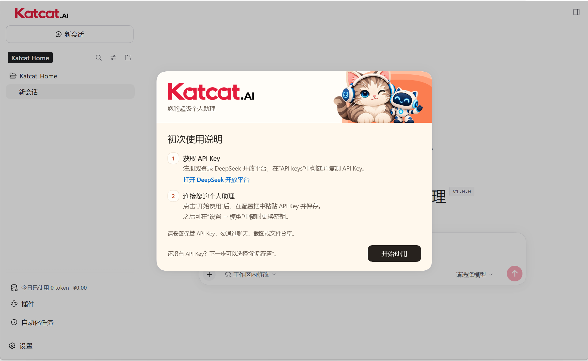
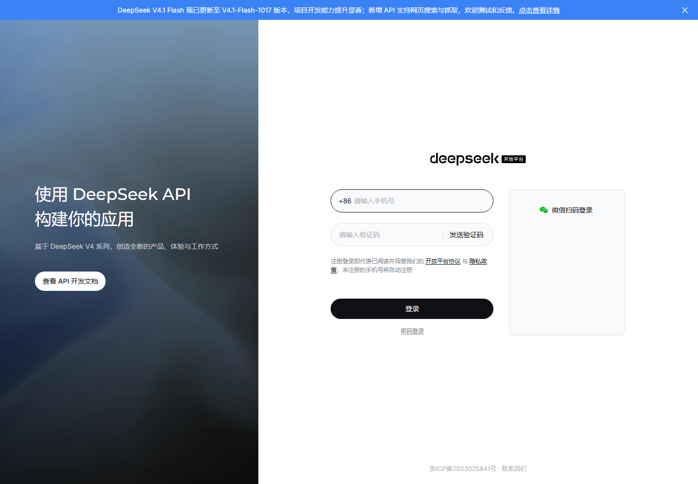

免费分享一个我基于 DeepSeek Harness 二次开发的 Windows 桌面智能体：Katcat.AI，您的超级个人助理 🐱
如果你平时主要用豆包网页版聊天、问问题，也想试试让 AI 帮你把想法做出来，欢迎来玩。
我做 Katcat 的想法很简单：让刚接触 AI 的朋友，有一个顺手的入口，慢慢摸索 AI 还能帮自己做些什么。
把 AI 助理请到你的桌面上
Katcat.AI 基于 DeepSeek Harness（DSH-0.2.1-rc.2）二次开发，内置并增强了文档处理、表格分析、数据可视化、内容创作、远程连接和自动化等日常办公能力。
我把一些最常用的能力直接内置进 Katcat.AI，希望它能比 DSH 原生版、WorkBuddy、豆包工作等工具更简单、更方便、更顺手，让大家把更多时间留给自己的想法。
软件免费分享。你只需要准备自己的 DeepSeek API Key，模型调用按实际用量付费。下面也把申请和配置的方法放好了，跟着操作就行。

还有一只陪你工作的小猫
界面有浅色和深色两种风格，桌面上还有一只戴耳机的小猫。
它负责可爱，Katcat 负责陪你把事情一点点做起来。希望这只小猫，也能陪你迈出 AI 造物的第一步。

先下载安装
下载地址：https://sudotech.ai/katcat.html
目前提供 Windows 10 / 11 的 x64 版本。下载安装后，首次打开会看到下面这张引导页。
已经有 DeepSeek API Key 的朋友，点“开始使用”，在接下来的配置框里粘贴并保存。没有的话，继续往下看；想先看看界面，也可以选择“稍后配置”。

注册 DeepSeek，拿到自己的 API Key
打开 DeepSeek 开放平台：https://platform.deepseek.com/
输入手机号，获取并填写短信验证码，然后登录。页面会自动为未注册的手机号创建账号；已有账号直接登录即可。
登录后，进入“API keys”页面，创建一个新密钥，再复制下来。直达入口：https://platform.deepseek.com/api_keys
API Key 就是让 Katcat 调用模型的一把钥匙。自己保管好，不用发给我，也别放进公开截图里。

填好钥匙，就可以开始了
回到 Katcat，点击“开始使用”，把 Key 粘贴到配置框并保存。如果之前跳过了引导，可以在“设置 → 模型”里配置。
在主界面选择一个工作区，也就是你准备用来放材料和作品的文件夹；如果提示“请选择模型”，选中已经配置好的模型，就可以开始聊天了。
如果提示余额不足，到 DeepSeek 开放平台查看余额，按需充值即可。网页版聊天和 API 调用的额度是分开的。
欢迎体验，也欢迎提建议
这是我免费分享给大家的桌面智能体小工具，主要想帮刚接触 AI 的朋友，把第一步走得轻松一点。
大神们见笑了，也欢迎来提提建议。哪里不好用、哪里看不懂，欢迎在评论区告诉我。
后续我会持续维护、迭代，不断完善和增强 Katcat 的能力，希望它能成为您真正用得顺手的超级个人助理！
感兴趣的话，就把小猫领回桌面吧 🐱